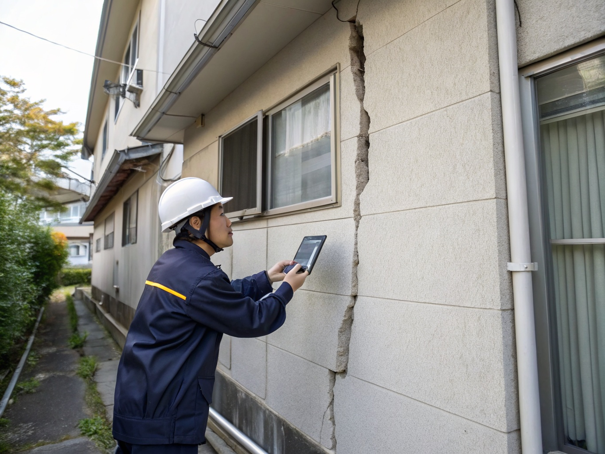
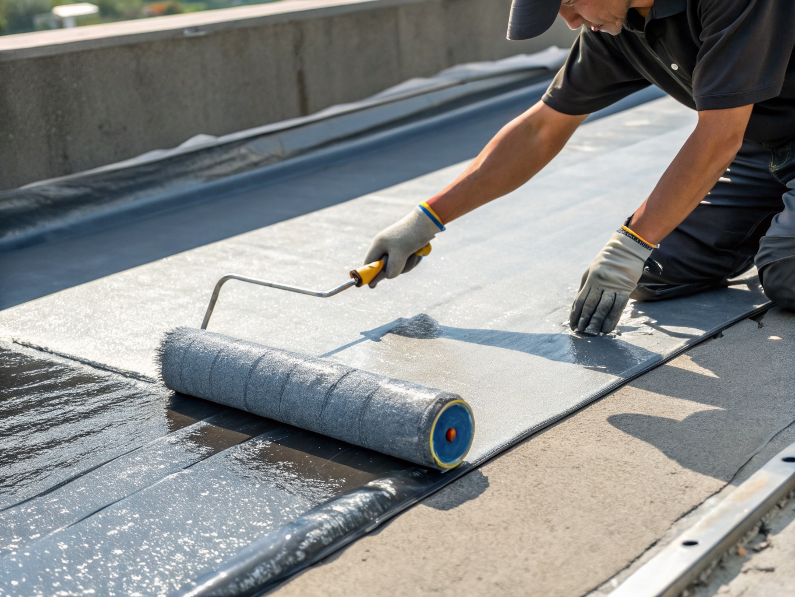

Reason 01正直な診断レポートに基づく、
必要な工事だけの提案
建物の修繕で最も大切なのは、正確な現状把握です。久米技建では、建物の状態を徹底的に調査し、写真付きの詳細な診断レポートを作成します。
「今すぐ必要な工事」「数年以内に検討すべき工事」「現時点では不要な工事」を明確に分類し、お客様が優先順位をつけて判断できる情報をお届けします。
不要な工事を提案して利益を上げるのではなく、お客様の建物と予算に最適な提案をする。それが、長期的な信頼関係の基盤だと考えています。
診断レポートに含まれる内容
- 建物全体の劣化状況写真
- 部位別の劣化度評価
- 推奨修繕工事の優先度
- 概算費用の目安
- 長期修繕計画への反映提案

Reason 02防水の専門技術を核にした、
一貫した施工管理体制
久米技建は、防水工事の専門会社として創業しました。建物の「防水」は、すべての建築物の長寿命化の根幹です。この専門知識をベースに、外壁塗装・シーリング・大規模修繕まで領域を拡大してきました。
調査・診断→工事計画→施工→検査→アフターフォローまで、すべてを自社で一貫管理。中間業者を介さない直接施工のため、コミュニケーションのロスがなく、品質管理が行き届きます。
施工管理技士4名が常時現場を監督し、工程・品質・安全を徹底管理しています。
 Reason 03
Reason 03
自社職人21名の直営施工。
品質にブレがない。
久米技建には21名の自社職人が在籍しています。一般的な建設会社では、工事の大半を下請け・協力会社に発注しますが、久米技建では自社の職人が直接施工するのが基本です。
定期的な技術研修と品質基準の共有により、どの現場でも均一な高品質を実現。「誰が担当しても同じクオリティ」ということが、お客様の安心につながっています。
一人ひとりの職人が自社の看板を背負って仕事をする。その責任感と技術力が、95%のリピート率という結果に表れています。